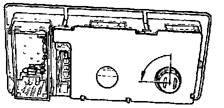

Map Light: Service and Repair
NOTE: When checking or replacing the right front map/reading light -W13- bulb, remove the entire light assemblyFig. 1:

Fig. 2:

- Remove front interior light assembly see Fig. 1.
- Twist bulb holder counter-clockwise (arrow Fig. 2) and remove from interior light.
- Pull bulb (12 V/5 W) straight out of holder (do not twist), replace with new bulb as necessary.
- Reinstall bulb holder on interior light and twist clockwise (opposite direction of arrow in Fig. 2) to lock in place.
Installing
- Install connectors onto interior light assembly.
- Install interior light assembly into headliner.